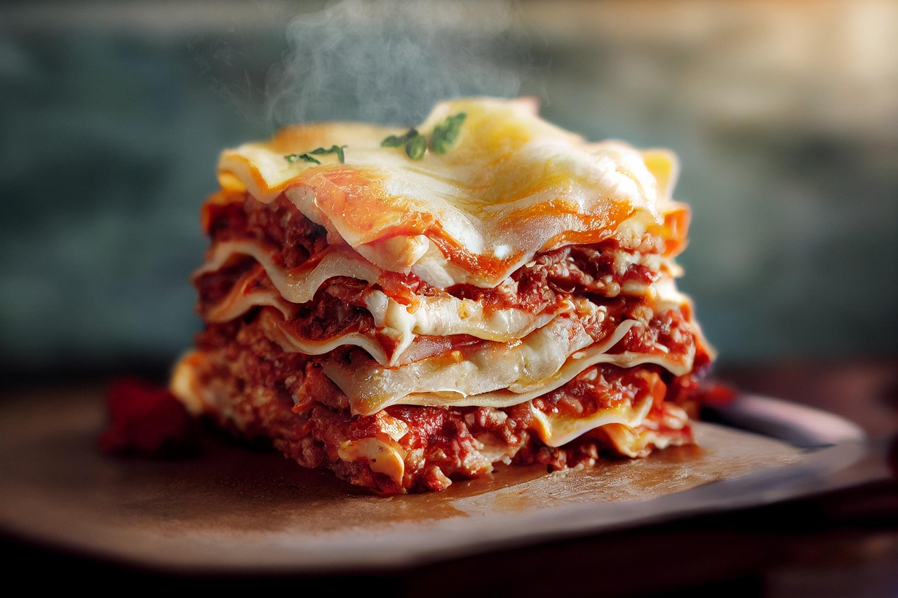

Home
Lasagna

Lasagna is a classic Italian dish made with layers of pasta, rich tomato or cream-based sauces, savory meats or vegetables, and melted cheese, baked to perfection. It’s a hearty and flavorful comfort food that’s loved around the world.
Ingredients
- Lasagna Pasta Sheets
- Tomato Sauce
- Ground Beef
- Ricotta Cheese
- Mozzarella Cheese
- Parmesan Cheese
- Onion
- Garlic
- Basil and Oregano
- Olive Oil
- Salt and Pepper
- In a baking dish, layer pasta sheets, sauce, cheese mixture, and mozzarella. Repeat layers.
- Top with mozzarella and Parmesan.
- Bake at 180°C (350°F) for about 30–40 minutes until golden and bubbling.
- Let it rest for 10 minutes before serving.
- Top with mozzarella and Parmesan.
- Bake at 180°C (350°F) for about 30–40 minutes until golden and bubbling.
- Let it rest for 10 minutes before serving.
Steps
- Boil lasagna sheets until just tender, then drain.
- Prepare the sauce: sauté onion and garlic in olive oil, add meat or vegetables, then stir in tomato sauce and herbs.
- Mix ricotta with a little salt and pepper for creaminess.
- In a baking dish, layer pasta sheets, sauce, cheese mixture, and mozzarella. Repeat layers.
- Top with mozzarella and Parmesan.
- Bake at 180°C (350°F) for about 30–40 minutes until golden and bubbling.
- Let it rest for 10 minutes before serving.